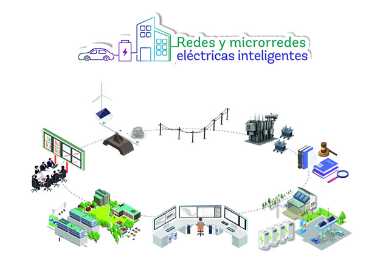

La energía verde es aquella que proviene de fuentes naturales como el sol, el viento, el agua y el calor de la Tierra. Es limpia, no contamina y es sostenible a largo plazo.
Estas fuentes permiten reducir el uso de combustibles fósiles y cuidar el medio ambiente.
Los paneles solares convierten la luz del sol en electricidad mediante celdas fotovoltaicas.
El viento mueve aspas que generan energía a través de turbinas eólicas.
Se produce aprovechando la fuerza del agua en movimiento, como ríos o presas.
Utiliza el calor interno de la Tierra para producir electricidad o calefacción.
